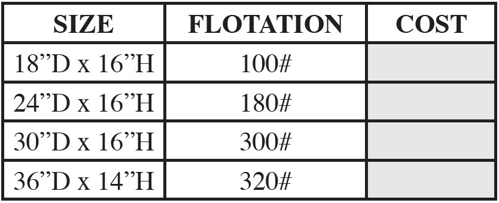

HOMAN ‘HULL FRIENDLY’ TITAN MOORING BUOY
ROPE NEST
As of January 1, 2020 Island Mooring Supp lies is limiting product of its Homan “Hull Friendly’ rope nest mooring buoys to the TITAN Series.
After many years of manufacturing various styles with a corresponding mariad of materials we feel the TITAN offers the very best combination of quality, innovation and value to our customers.
The TITAN exterior shell is comp osed of polyethylene while the flotation is provided by a closed cell foam that will not absorb water. With a nonmarring PVC fender your buoy will not damage your vessels hull. The buoy design provides a larger area for pendant storage and fittings while allowing for mast buoy storage.
The Homan “Hull Friendly” TITAN mooring buoy is the evolution of many years of manufacturing mooring buoys.